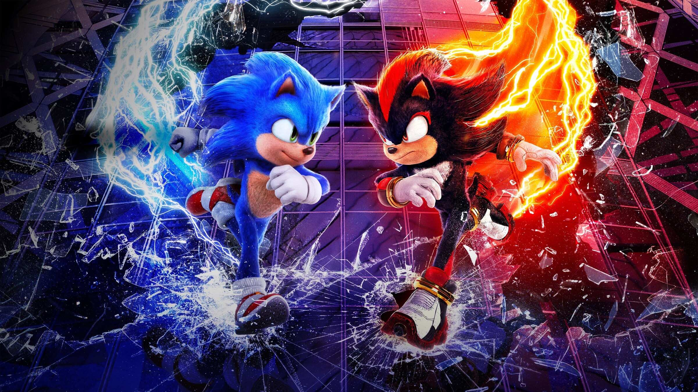
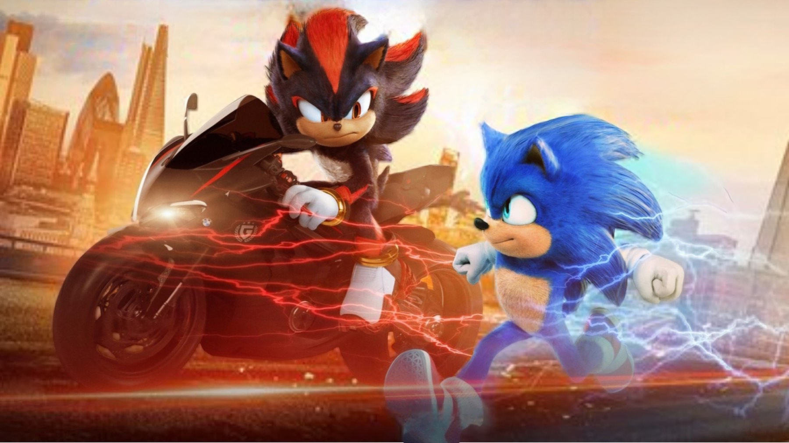
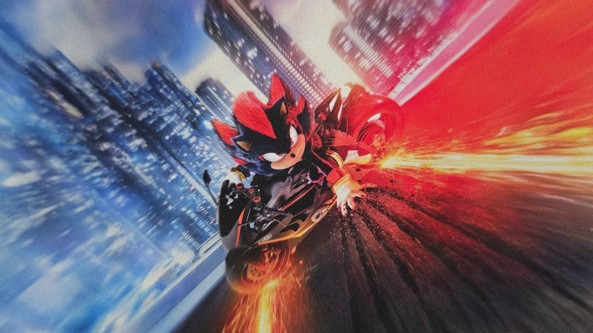

Sonic 3: il film con Keanu Reeves, la recensione
Il terzo capitolo gioca la carta Shadow e mette Jim Carrey in un doppio ruolo: più ambizioso dei primi due, ma sempre con la leggerezza di un film per tutta la famiglia
Un riccio blu che corre più veloce del suono, una volpe a due code e un echidna burbero: nel 2024 la squadra di Sonic era già nota a milioni di spettatori, e il rischio del terzo capitolo era quello di ogni sequel di successo, ripetersi. Sonic 3 – Il film, diretto ancora da Jeff Fowler, ha scelto un'altra strada: dare alla squadra un avversario che non si batte a colpi di battute. Si chiama Shadow, ha la voce di Keanu Reeves e cambia il tono della saga più di quanto ci si aspetterebbe da un film nato per le famiglie.
In Italia è uscito il 1° gennaio 2025, distribuito da Eagle Pictures. Nelle anteprime della sera del 31 dicembre ha incassato 1.229.151 euro, e alla fine ha raggiunto 8.900.899 euro nelle sale italiane, più dei due film precedenti. Nel mondo, secondo Box Office Mojo, ha chiuso a 492,2 milioni di dollari, con un budget dichiarato di 122 milioni.
Di cosa parla Sonic 3?
Sonic, Tails e Knuckles devono vedersela con Shadow, un essere misterioso dai poteri fuori dal comune, con un passato doloroso e un conto da regolare con l'umanità. A offrirgli un'alleanza sono i Robotnik: Ivo e suo nonno Gerald, entrambi interpretati da Jim Carrey. Il film procede così su due binari, la corsa contro un nemico più forte di loro e la ricerca del motivo per cui Shadow è diventato quello che è. Non sveliamo altro: il film è più bello se lo si scopre.

Un cattivo con una storia
La mossa più riuscita di Fowler e degli sceneggiatori Pat Casey, Josh Miller e John Whittington è trattare Shadow come un personaggio e non come un ostacolo. Per i primi due film l'avversario era il Robotnik di Carrey, un cattivo da fumetto sopra le righe. Qui il confronto è più duro, e il film si prende dei momenti seri senza smettere di strizzare l'occhio ai fan dei videogiochi Sega. Il bello è che l'equilibrio regge: le battute arrivano, ma non coprono mai il lato malinconico del nuovo arrivato.
Reeves è stato scelto per Shadow anche grazie all'esperienza nei film di John Wick, e si sente: la sua voce, bassa e misurata, fa a pezzi il tono acuto e saltellante a cui la saga ci aveva abituati. Uno dei pochi appunti riguarda proprio questo: Shadow ha meno tempo in scena di quanto meriterebbe, e alcuni passaggi della sua storia corrono via in fretta.
Jim Carrey, due volte
Il doppio ruolo di Carrey è il motore comico del film. Ivo Robotnik è il solito cattivo istrionico, ma Gerald porta una sfumatura inedita, più composta e inquietante, che permette all'attore di cambiare registro da una scena all'altra. Non è un caso che per la sua interpretazione Carrey abbia vinto il premio per il miglior cattivo ai Kids' Choice Awards 2025. È un riconoscimento da pubblico giovane, ma racconta bene il punto: i film di Sonic funzionano quando c'è qualcuno che si diverte tanto a rovinare la festa.
Un film per famiglie che per una volta sa fare i conti con il dolore del suo cattivo.

Azione, ritmo e qualche limite
Le scene d'azione sono il punto forte: inseguimenti, scontri a velocità impossibili e una regia che sa rendere chiare le geometrie anche quando tutto si muove a mille. L'animazione di pelo, scie di luce e volti è rifinita, e Tails e Knuckles hanno più spazio che in passato. Idris Elba dà a Knuckles quella serietà involontariamente comica che è diventata la sua firma.
I limiti sono quelli del genere. La parte umana, con James Marsden e Tika Sumpter, funziona soprattutto come zavorra di buoni sentimenti e rallenta il ritmo. Il critico italiano Alessio Baronci, citato da Wikipedia, lamenta che il film riduce una storia leggerissima a un tutto testa e fatica a cogliere l'entusiasmo del cinema puro: un'osservazione che condividiamo in parte, perché nella seconda metà la trama si accontenta di rincorrere i suoi effetti.
Va detto anche che il film sa a chi parla. Chi ha giocato ai titoli Sega troverà strizzatine d'occhio e nomi familiari, ma nessuno si sente escluso: chi non ha mai preso in mano un controller segue la storia senza fatica, perché i rapporti tra i personaggi sono spiegati con chiarezza. È una qualità meno scontata di quanto sembri, in un cinema di franchise dove spesso bisogna aver visto tutto il resto per capire qualcosa.
Come è stato accolto
Al momento in cui scriviamo, ottobre 2026, il film ha l'85% di recensioni positive su Rotten Tomatoes e 56 su 100 su Metacritic, un punteggio «misto» che dice due cose: i critici più severi non hanno trovato molto di nuovo nel racconto, il pubblico ha premiato invece un film divertente e mai noioso. Le recensioni più positive hanno lodato soprattutto Reeves e Carrey.
Dove vederlo e a chi lo consigliamo
Secondo la scheda di TMDB, a ottobre 2026 Sonic 3 è disponibile in streaming su Netflix e Paramount+ tramite Amazon Channel, oltre che a noleggio su Apple TV, Google Play, Rakuten TV e Amazon Video. Lo consigliamo a chi ama l'avventura leggera da vedere con i ragazzi, ai fan dei videogiochi e a chi aveva trovato troppo scherzosi i primi due capitoli: qui il tono è più maturo, senza perdere il sorriso.
Il miglior capitolo della serie finora: più ambizioso, con un cattivo credibile e un Jim Carrey in grande forma. Non rinnova il genere e la parte umana è la più fiacca, ma diverte, commuove a tratti e dura il giusto.
Domande frequenti
Quando è uscito Sonic 3 in Italia?
Il 1° gennaio 2025, distribuito da Eagle Pictures.
Chi dà la voce a Shadow?
Nella versione originale Keanu Reeves; in quella italiana Claudio Moneta.
Dove si vede Sonic 3 in streaming?
Secondo TMDB, a ottobre 2026 su Netflix e Paramount+ tramite Amazon Channel.